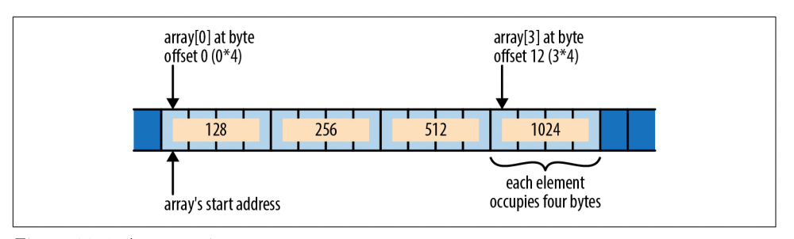
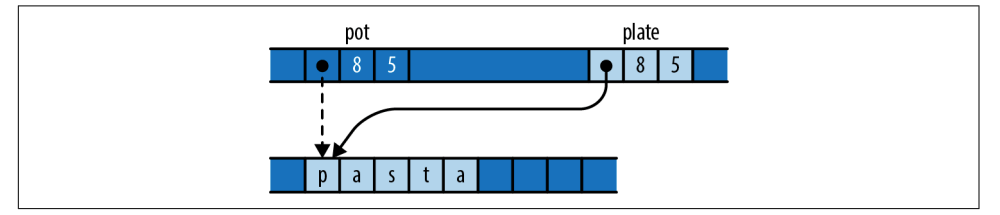
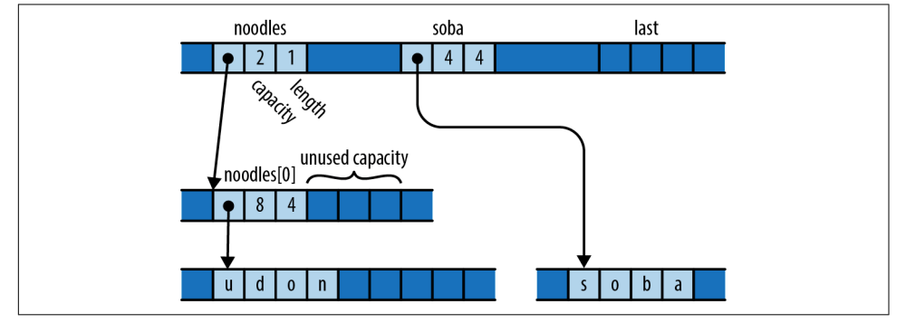
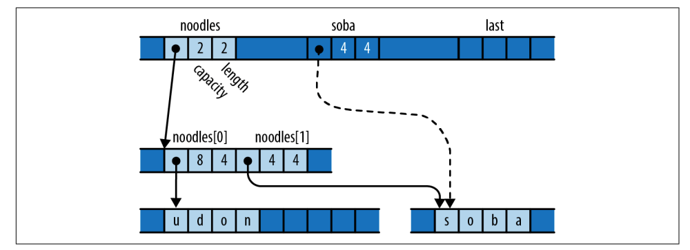
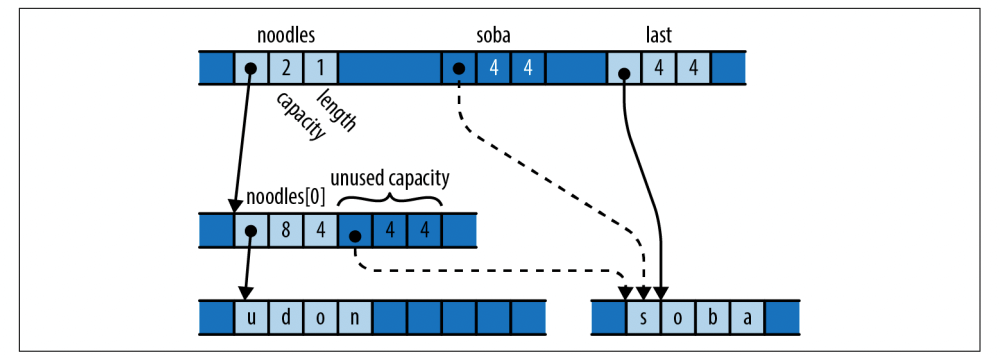
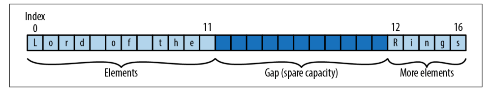
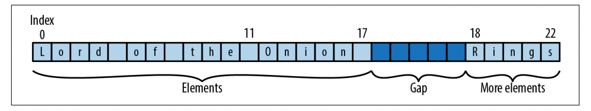

【Rust】unsafe 代码
系统编程的秘密乐趣在于，在每一种安全语言和精心设计的抽象之下，都存在着极其 unsafe 的机器语言和小技巧，我们也可以用 Rust 来写。
到目前为止，我们介绍的语言可确保程序通过类型、生命周期、边界检查等完全自动地避免内存错误和数据竞争，但是这种自动推断有其局限性，有许多有价值的技术手段是无法被 Rust 认可的。
unsafe 代码告诉 Rust，程序选择使用它无法保证安全的特性。通过将代码块或函数标记为 unsafe，可以获得调用标准库中的 unsafe 函数、解引用 unsafe 指针以及调用用其他语言（如 C 和 C++ ）编写的函数以及其他能力。
这种跳出安全 Rust 边界的能力使得在 Rust 中实现许多 Rust 最基本的功能成为可能，就像 C 和 C++ 用来实现自己的标准库一样。 unsafe 代码允许 Vec 有效地管理其缓冲区、 std::io 能直接和操作系统对话、以及提供并发原语的 std::thread 和 std::sync。
本节将 unsafe 功能的要点：
-
Rust的unsafe块在安全的Rust代码和使用unsafe特性的代码之间建立了界限； -
可以将函数标记为
unsafe，提醒调用者存他们必须遵守的额外规范以避免未定义的行为； -
裸指针及其方法允许不受限制地访问内存，并允许构建
Rust类型系统原本禁止的数据结构。尽管Rust的引用是安全但受约束的，但正如任何C或C++程序员所知道的，裸指针是一个强大而锋利的工具； -
了解未定义行为将帮助理解为什么它会产生比仅仅得到错误结果更严重的后果；
-
unsafe的Trait，类似于unsafe的函数，强加了每个实现必须遵循的规约；
unsafe 示例
下面这段程序在原书中说是运行会崩溃，但是在我自己的电脑上并未发生，就当它崩溃了吧。（我的 Rust 版本是 rustc 1.62.0-nightly ）
1 | fn main() { |
该程序借用了对局部变量 a 的可变引用，将其转换为 *mut usize 类型的裸指针，然后使用 offset 方法在内存中生成一个指针，新指针等于 ptr + 3 * size_of::<uszie>()。按原书说这恰好是存储 main 的返回地址的地方（这其实得看 Rust 的调用规约了）。程序用一个常量覆盖了返回地址，这样从 main 中返回的行为就不确定了。导致这次崩溃的原因是程序对 unsafe 特性的错误使用，在这里就是滥用解引用裸指针的能力。
一个 unsafe 的特性是会有一个使用规约：但是 Rust 不能自动强制执行，所以必须遵循这些规约以避免未定义的行为。
unsafe 代码能跳过常规的类型检查和生命周期检查，但增加了更多的使用规约。通常， Rust 本身根本不知道这些规约，它们只是在该功能的文档中进行了解释。例如，裸指针类型有一个规约，禁止解引用已超出其原来范围的指针，此示例中的表达式 *ptr.offset(3) = ... 违反了此约定。但是， Rust 依然编译了程序：它的安全检查没有检测到这种违规行为。当使用 unsafe 的功能时，作为程序员，有责任检查代码是否符合他们的规约。
许多功能都有正确使用它们应该遵循的规则，但这些规则不是我们在这里所说的意义上的规约，除非可能的后果包括未定义的行为。未定义的行为是 Rust 坚信你的代码永远不会出现的行为，例如， Rust 假设你不会用其他东西覆盖函数调用的返回地址。通过 Rust 的安全检查并遵守非安全功能规约的代码不可能做这样的事情。由于该程序违反了裸指针规约，它的行为是未定义的，所以出错了。
如果代码出现了未定义的行为， Rust 就无法保证代码会执行到哪里了，也无法保证结局，更无法保证安全。可能报告出一对不相关的错误消息然后崩溃，或者系统的控制权让出给其他程序，而且不同的 Rust 版本之间也不保证一致，也不会存在告警。
规定只能在 unsafe 代码块或函数中使用 unsafe 的功能；我们将在接下来的部分中解释这两个。通过强制编写一个 unsafe 代码块或函数，这会提醒开发者在使用 unsafe 功能时应该格外小心， Rust 确保开发者知道需要遵循额外的规约。
unsafe 代码块
Rust 的 unsafe 代码块和普通到的代码块看起来没什么两样，只是由一个 unsafe 关键字开始：
1 | unsafe { |
如果块前面没有 unsafe 关键字， Rust 不让使用 from_utf8_unchecked，它是一个 unsafe 的函数。
与普通的 Rust 块一样， unsafe 代码块的值是其最终表达式的值，如果没有，则为 ()。前面显示的对 String::from_utf8_unchecked 的调用提供了块的值。
unsafe 代码块提供了 5 个编程能力：
-
可以调用
unsafe的函数，但是每个unsafe的函数都必须根据其用途指定自己的规约； -
可以解引用裸指针，安全代码可以传递裸指针并且比较它们，并通过从引用（甚至从整数）转换来创建它们，但只有
unsafe代码才能真正使用它们来访问内存； -
可以访问联合体的字段，编译器无法确定它们是否包含代表它们类型的有效位模式；
-
可以访问可变静态变量，
Rust无法确定线程何时使用可变静态变量，因此它们的规约要求确保所有访问都是同步的； -
可以访问通过
Rust的外部函数接口声明的函数和变量。即使它们是不可变的，它们也被认为是unsafe的，因为它们对于用其他可能不遵守Rust安全规则的语言编写的代码是可见的；
将 unsafe 的功能限制在 unsafe 代码块中并不能真正阻止我们要做的事情，这个限制的好处主要在于将开发者的注意力吸引到 Rust 无法保证安全的代码上：
-
不会不小心使用了
unsafe的特性，然后发现要为不知道的规约负责，肯定是开发者写的，出了事也要自己兜着，别怪Rust； -
一个
unsafe的代码块会引起commiter的更多关注。一些项目甚至具有自动化来确保这一点，标记为unsafe的代码块可以引起特别关注； -
当考虑编写一个
unsafe的块时，需要花点时间问问自己你的任务是否真的需要这样的措施。如果是为了性能，你是否有测量表明这实际上是一个瓶颈。也许有一个好方法可以在安全的Rust中完成同样的事情，不要为了那么一丁点的性能牺牲了整个程序的安全性。
高效的 ASCII
这里有一个 Ascii 类型，一个总是包含有效 ASCII 的 string 类型，使用了一个 unsafe 功能零成本转换成 String。
1 | mod my_ascii { |
这个模块的关键是 Ascii 类型的定义，类型本身被标记为 pub，以使其在 my_ascii 模块之外可见。但是该类型的 Vec<u8> 元素不是公共的，所以只有 my_ascii 模块可以构造一个 Ascii 值或引用它的元素。事实上，公共构造函数 Ascii::from_bytes 在构造一个 Ascii 之前仔细检查了可能出现的错误，确保 Ascii 值始终包含正确的 ASCII 文本，就像 String 的方法确保其内容是有效的 UTF-8 一样。
这种保证让我们可以非常有效地为 String 实现 From<Ascii>。 unsafe 函数 String::from_utf8_unchecked 接受一个字节 vector 并从中构建一个字符串，而不检查其内容是否是有效的 UTF-8 文本，函数的规约是让调用者对此负责。幸运的是， Ascii 类型强制执行的规则正是我们需要满足 from_utf8_unchecked 的规约。因为任何 ASCII 文本块也是有效的 UTF-8，因此 Ascii 的底层 Vec<u8> 可以立即用作字符串的缓冲区。
有了这些定义，我们可以写出如下的代码：
1 | use my_ascii::Ascii; |
但使用 Ascii 不需要 unsafe 代码块，这里已经使用 unsafe 的操作实现了一个安全的接口，并且只根据模块自己的代码而不是用户的行为来安排满足他们的规约。
Ascii 只不过是 Vec<u8> 的包装器，隐藏在一个模块中，该模块对其内容实施额外的规则。这种类型称为 newtype，是 Rust 中的一种常见模式。 Rust 的 String 类型的定义方式完全相同，只是它的内容被限制为 UTF-8，而不是 ASCII。下面是标准库中对 String 的定义：
1 | pub struct String { |
在机器层面上，去掉 Rust 类型， newtype 和它原本的类型在内存中有相同的表示，所以构造一个 newtype 根本不需要任何机器指令。在 Ascii::from_bytes 中，表达式 Ascii(bytes) 简单地认为 Vec<u8> 的表示方法现在持有一个 Ascii 值。类似地， String::from_utf8_unchecked 在内联时可能不需要机器指令： Vec<u8> 现在被认为是一个字符串。
unsafe 函数
一个 unsafe 的函数定义看起来像一个普通的函数定义，前面有 unsafe 关键字。 unsafe 函数的主体自动被视为 unsafe 块。
只能在 unsafe 的块中调用 unsafe 的函数。这意味着将函数标记为 unsafe 会提醒调用者使用它们必须认真看文档以避免未定义的行为。
例如，这是我们之前介绍的 Ascii 类型的新构造函数，它从字节 vector 构建 Ascii，而不检查其内容是否为有效的 ASCII ：
1 | // This must be placed inside the `my_ascii` module. |
从使用场景来说，可能已经确定调用 Ascii::from_bytes_unchecked 的代码的 vector 仅包含 ASCII 字符，因此 Ascii::from_bytes 坚持执行的检查将是浪费时间。
但之前我们强调了 Ascii 的公共构造函数和方法的重要性，以确保 Ascii 值的格式正确，而 from_bytes_unchecked 制定规约将其传递给它的调用者来履行其义务。这个规约将函数标记为 unsafe 是完全正确的：尽管函数本身不执行 unsafe 的操作，但它的调用者必须遵循 Rust 无法自动强制执行的规约以避免未定义的行为。
我们可以不遵循 Ascii::from_bytes_unchecked 的规约，然后构造一个无效格式的 UTF-8 字符串：
1 | // Imagine that this vector is the result of some complicated process |
在某些版本的 Rust 中，在某些平台上，这个断言被观察到会失败 时，会出现以下有趣的错误信息（然而我自己测试并未出现）：
thread 'main' panicked at 'assertion failed: `(left == right)`
left: `2097151` ,
right: `2097151` ', src/main.rs:42:5
这两个数字在我们看来是相等的，但这不是 Rust 的错，而是之前 unsafe 代码的错。当我们说未定义行为会导致不可预测的结果时，这就是我们所指的那种情况。
从本质上讲， Rust 的类型检查器、借用检查器和其他静态检查是在检查程序，并试图证明程序中不存在未定义的行为。当 Rust 成功编译程序时，这意味着它成功地证明了代码是合理的。然而一个 unsafe 的块是这个证明中的一个缺口，这就相当于程序员对 Rust 口头说相信我的代码，不过口头承诺是否正确，可能取决于程序中影响 unsafe 块中发生的任何部分，而错误的后果可能出现在受 unsafe 块影响的任何地方。编写 unsafe 关键字相当于提醒你没有得到语言安全检查的全部保证。
如果有选择的话，你应该自然而然地倾向于创建没有隐含规约的安全接口。这些接口更容易操作，因为用户可以依靠 Rust 的安全检查来确保他们的代码不存在未定义的行为。即使你的实现使用了 unsafe 的特性，最好还是使用 Rust 的类型、生命周期和模块系统来满足它们的规约。
不幸的是，在很多地方遇到 unsafe 的函数是很正常的，这些函数的文档并没有对它们的规约进行解释。你应该根据你的经验和对代码行为的了解，自己推断出规则。
unsafe block or unsafe fn
使用 unsafe 代码块还是 unsafe 函数，需要考虑：
-
如果有可能以一种编译正常但仍导致未定义行为的方式滥用该函数，你必须将其标记为
unsafe。正确使用该函数的规则就是它的规约；规约的存在就是使该函数unsafe的原因； -
否则，该函数是安全的：对它的良好类型的调用都不会导致未定义的行为，它不应该被标记为
unsafe。该函数是否在其主体中使用了unsafe的特性并不重要，重要的是规约的存在。之前，我们展示了一个没有使用unsafe特征的unsafe函数，以及一个使用了unsafe特性的安全函数。
不要因为在一个安全函数的主体中使用了 unsafe 的特征，就把它标记为 unsafe，这将使函数更难使用，并使读者感到困惑，他们会（正常情况下）期望在某处找到规约的解释。
未定义行为
在介绍中，我们说过，未定义的行为是指 Rust 坚决认为你的代码不可能出现的行为。这是一个很奇怪的说法，尤其是我们从其他语言的经验中知道，这些行为确实会经常意外发生。为什么这个概念对规定 unsafe 代码的义务有帮助？
我们知道编译器是一种编程语言到另一种语言的翻译器。 Rust 编译器将一个 Rust 程序翻译成一个等效的机器语言程序。但是，如果说这种完全不同的语言的表示的程序是等价的，这意味着什么？
意味着两个程序在执行时总是有相同的可见行为，它们进行相同的系统调用，以相同的方式与外部库交互，等等。这有点像程序的图灵测试：如果你无法分辨你是在与原版还是译版互动，那么它们就是等价的。
现在考虑一下下面的代码：
1 | let i = 10; |
即使对 very_trustworthy 的定义一无所知，我们也可以看到它只接受对 i 的共享引用，所以这个调用不能改变 i 的值。由于传递给 println! 的值总是 1000， Rust 可以将这段代码翻译成机器语言，就像：
1 | very_trustworthy(&10); |
这个转换后的版本具有与原版相同的行为，而且它的速度可能会快一点。但只有当我们同意这个版本与原始版本具有相同的意义时，考虑这个版本的性能才有意义。如果 very_trustworthy 被定义为以下情况呢？
1 | fn very_trustworthy(shared: &i32) { |
这段代码打破了共享引用的规则：它将 i 的值改为 20，尽管它不应该被修改，因为 i 是借用来共享的。结果，我们对调用者所做的转换现在有一个非常明显的效果：如果 Rust 转换代码，程序会打印 1000 ；如果它不理会代码并使用 i 的新值，它会打印 2000。在 very_trustworthy 中打破共享引用的规则意味着共享引用在其调用者中不会像预期的那样运行。
这类问题几乎出现在 Rust 可能尝试的每一种转换中。即使是将一个函数内联到它的调用位置，也假定当被调用者完成时，控制流将返回到调用站点。但是我们在这一章的开头举了一个甚至违反了这个假设的不良代码的例子。
对于 Rust 来说，除非它能相信语言的基本功能会按照设计的方式运行，否则基本上不可能评估对程序的转换是否保留了其意义。而他们是否能做到这一点，不仅取决于手头的代码，还取决于程序的其他可能遥远的部分。 为了对你的代码做任何事情，Rust 必须假设你的程序的其他部分是具有良好的行为。
Rust 定义了具有好行为的程序：
-
禁止读未初始化的内存；
-
程序不得创建无效的原始值：
- 引用，
Box或者fn指针不能是Null； bool值只能是0或者1；- 枚举值只能使用有效的项；
char必须是有效的Unicode码点；str必须是有效的UTF-8；- 胖指针必须具有有效的
vtables或者slice长度； - 不得使用 特殊类型 ! 的任何值；
- 引用，
-
必须遵守引用规则，任何引用都不能比其引用的值活得更久；共享访问是只读访问；可变访问是独占访问；
-
程序不得解引用空指针、不正确对齐的指针或悬空指针；
-
程序不得使用指针访问与指针关联的分配之外的内存；
-
程序必须没有数据争用，当两个线程在没有同步的情况下访问相同的内存位置时，如果至少其中一个访问是写入，就会发生数据竞争；
-
The program must not unwind across a call made from another language, via the foreign function interface.
-
程序必须遵守标准库函数的约定；
由于我们还没有一个完整的 Rust unsafe 代码语义模型，这个列表可能会随着时间的推移而演变，但这些可能永远是被禁止的。
任何违反这些规则的行为都会构成未定义的行为，并使 Rust 优化程序并将其翻译成机器语言而变得不可信。
不使用 unsafe 特性的 Rust 代码保证在编译后遵循所有前面的规则。只有当使用 unsafe 功能时，这些规则才会成为必尽责任。
unsafe Trait
unsafe trait 是具有规约的 trait，Rust 无法检查或强制实现者必须满足以避免未定义的行为。要实现 unsafe trait，必须将实现标记为 unsafe。由开发者来理解 trait 的 规约 并确保你的类型满足它。
将其类型变量与 unsafe trait 绑定的函数通常是使用 unsafe trait 本身的函数，并且仅通过依赖于 unsafe trait 的规约来满足它们的规约, trait 的不正确实现可能会导致此类函数表现出未定义的行为。
std::marker::Send 和 std::marker::Sync 是 unsafe trait 的经典示例。这些 trait 没有定义任何方法，因此对于任何类型都可以轻松实现。但是它们确实有规约：Send 要求实现者可以安全地移动到另一个线程，而 Sync 要求它们可以安全地通过共享引用在线程之间共享。例如，为不合适的类型实现 Send 将使 std::sync::Mutex 不能完全避免数据竞争。
举个简单的例子，Rust 标准库曾经包含一个 unsafe trait 的 core::nonzero::Zeroable，用于可以通过将所有字节设置为零来安全初始化的类型。显然，将 usize 归零很好，但是将 &T 归零会返回一个空引用，如果解引用，这将导致崩溃。对于可归零的类型，可以进行一些优化：可以使用 std::ptr::write_bytes （ Rust 的 memset 等效项）快速初始化它们的数组，或者使用分配归零页面的操作系统调用。 （ Zeroable 是不稳定的，在 Rust 1.26 的 num 包中被转移到仅供内部使用，但它是一个很好的、简单的、真实的例子。） Zeroable 是一个典型的标记特征，没有方法或相关类型：
1 | pub unsafe trait Zeroable {} |
合适类型的实现同样简单：
1 | unsafe impl Zeroable for u8 {} |
使用这些定义，我们可以编写一个函数来快速分配一个给定长度的包含 Zeroable 类型的 vector ：
1 | use core::nonzero::Zeroable; |
该函数首先创建一个具有所需容量的空 Vec，然后调用 write_bytes 以用零填充未占用的缓冲区。（ write_bytes 函数将 len 视为 T 元素的数量，而不是字节的数量，所以这个调用确实填满了整个缓冲区。） vector 的 set_len 方法改变它的长度而不对缓冲区做任何事情； 这是不安全的，因为必须确保 vector 的缓冲区空间实际上包含正确初始化的 T 类型值。但这正是 T：Zeroable 界限所建立的：零字节块表示有效的 T 值，我们使用 set_len 是安全的。
这里我们可以写：
1 | let v: Vec<usize> = zeroed_vector(100_000); |
显然，Zeroable 必须是一个不 unsafe trait，因为不尊重其规约的实现可能会导致未定义的行为：
1 | struct HoldsRef<'a>(&'a mut i32); |
Rust 不知道 Zeroable 是什么意思，也不知道什么类型会实现它。与任何其他 unsafe 特性一样，由开发者来理解和遵守 unsafe trait 的规约。
裸指针
Rust 中的裸指针是不受约束的指针，可以使用裸指针来形成 Rust 指针类型无法形成的各种结构，例如双向链表或任意对象图。但是由于裸指针非常灵活，Rust 无法判断是否安全地使用它们，因此只能在不安全的块中解引用。裸指针本质上等同于 C 或 C++ 指针，因此它们对于与用这些语言编写的代码进行交互也很有用。
这里有两种类型的裸指针：
*mut T，指向T类型，并且允许对它指向的内容进行修改；*const T，指向T类型，但是只允许读取它引用的内容；
（记住，这里没有 *T 类型，必须总是声明 const 或者 mut。）
可以将一个普通引用转换成裸指针，并且使用 * 解引用：
1 | fn main() { |
不像 box 和 Rust 引用，裸指针可能是空，类似于 C 里面的 NULL，或者 C++ 中的 nullptr ：
1 | fn option_to_raw<T>(opt: Option<&T>) -> *const T { |
这个例子没有 unsafe 代码块，因为创建裸指针，传递、比较都是安全的，仅解引用裸指针是不安全的。
指向 unsized 类型的裸指针是胖指针，就像对应的引用或 Box 类型一样。*const [u8] 指针包括长度和地址，并且像 *mut dyn std::io::Write 指针这样的 trait 对象携带 vtable。
尽管 Rust 在各种情况下隐式解引用安全指针类型，但裸指针解引用必须是显式的：
-
.运算符不会隐式解引用裸指针，必须写(*raw).field或者(*raw).method(...)； -
裸指针不实现
Deref，因此deref不适用于它们； -
诸如
==和<之类的运算符将裸指针作为地址进行比较：如果两个裸指针指向内存中的相同位置，则它们相等。类似地，对裸指针进行hash是以它们的地址为输入，而不是它们指向的内容； -
格式化
trait，如std::fmt::Display根本不处理裸指针，例外是std::fmt::Debug和std::fmt::Pointer，它们将裸指针显示为十六进制地址，而不解引用它们；
与 C 和 C++ 中的 + 运算符不同，Rust 的 + 不处理裸指针，但可以通过它们的 offset 和 wrapping_offset 方法，或者更方便的 add 、 sub 、 wrapping_add 和 wrapping_sub 方法来执行指针运算。 相反，offset_from 方法以字节为单位给出两个指针之间的偏移量：
1 | fn main() { |
first 和 last 不需要显式转换，只需指定类型就足够了。 as 运算符允许引用和裸指针，或者两种裸指针类型之间的几乎所有可能的转换。但是，可能需要将复杂的转换分解为一系列更简单的步骤。 例如：
1 | &vec![42_u8] as *const String; // error: invalid conversion |
以这种方式生成的引用具有不受约束的生命周期，它的生命周期没有限制，因为裸指针没有给 Rust 提供参考依据。还有就是 as 不能将裸指针转换为 Rust 的引用，这样的转换将是不安全的。而且，必须在 unsafe 代码块中解引用裸指针，然后借用结果值。
许多类型都有 as_ptr 和 as_mut_ptr 方法，它们返回指向其内容的裸指针。例如，数组切片和字符串返回指向它们的第一个元素的指针，并且一些迭代器返回指向它们将产生的下一个元素的指针。拥有像 Box、 Rc 和 Arc 这样的指针类型有 into_raw 和 from_raw 函数，它们可以在裸指针之间进行转换。其中一些方法的规约提出了难以置信的要求，因此在使用它们之前检查它们的文档。
允许将整数转换成裸指针，但通常是先把指针转换成整数，进行运算，然后转换成裸指针。
与 Rust 的引用不同，裸指针没有实现 Send 也没有实现 Sync。因此，默认情况下，任何包含裸指针的类型都不会实现这些 Trait。在线程之间发送或共享裸指针本身并没有什么不安全的。毕竟，无论它们走到哪里，都需要一个 unsafe 代码块来解引用它们。但是考虑到裸指针通常扮演的角色，语言设计者认为这种行为是最好的的默认设置。
安全解引用裸指针
以下是一些安全使用裸指针的常识性指南：
-
解引用空指针或悬空指针是未定义的行为，就像引用未初始化的内存或超出范围的值一样；
-
解引用未针对其引用类型正确对齐的指针是未定义的行为；
-
You may borrow values out of a dereferenced raw pointer only if doing so obeys the rules for reference safety: no reference may outlive its referent, shared access is read-only access, and mutable access is exclusive access. (This rule is easy to violate by accident, since raw pointers are often used to create data structures with nonstandard sharing or ownership.)
-
只有当裸指针是其类型有效值时，才可以使用它的引用。例如，必须确保取消引用
*const char会产生正确的Unicode代码点； -
可以对裸指针使用
offset和wrapping_offset方法，仅指向裸指针所指的变量或堆内存块中的字节，或指向超出该区域的第一个字节。如果通过将指针转换为整数、对整数进行算术然后将其转换回指针来进行指针运算，则结果必须是offset方法允许生成的指针，也就是遵循offset的规约； -
If you assign to a raw pointer’s referent, you must not violate the invariants of any type of which the referent is a part. For example, if you have a
*mut u8pointing to a byte of aString, you may only store values in thatu8that leave the String holding well-formedUTF-8.
除了借用规则之外，这些规则与在 C 或 C++ 中使用指针时必须遵循的规则基本相同。
The reason for not violating types’ invariants should be clear. Many of Rust’s standard types use unsafe code in their implementation, but still provide safe interfaces on the assumption that Rust’s safety checks, module system, and visibility rules will be respected. Using raw pointers to circumvent these protective measures can lead to undefined behavior.
裸指针的完整、准确的约定不容易说明，并且可能随着语言的发展而改变，但是这里概述的原则可以让代码保持较为安全的状态。
示例： RefWithFlag
下面是一个示例，说明如何利用裸指针实现的经典的位级 hack 并将其包装为完全安全的 Rust 类型。该模块定义了一个类型， RefWithFlag<'a, T>，它同时包含一个 &'a T 和一个布尔值，就像元组 (&'a T, bool) 一样，但仍然设法只占用一个机器字而不是两个，这种技术经常在垃圾收集器和虚拟机中使用，其中某些类型（例如，表示对象的类型）非常多，以至于在每个值中添加一个机器字都会大大增加内存使用：
1 | mod ref_with_flag { |
这段代码利用了许多类型必须放在内存中的偶数地址这一事实：由于偶数地址的最低有效位始终为零，我们可以在那里存储其他内容，然后只需通过屏蔽底部位即可重建原始地址。并非所有类型都符合条件，例如，类型 u8 和 (bool, [i8; 2]) 可以放在任何地址。但是我们可以在构造函数中检查类型的对齐方式拒绝那些不能使用的类型。
我们可以这样使用：
1 | use ref_with_flag::RefWithFlag; |
构造函数 RefWithFlag::new 接受一个引用和一个 bool 值，断言引用的类型是合适的，然后将引用转换为裸指针和 usize。 usize 类型被定义为足够大，可以在我们编译的任何处理器上保存一个指针，因此将裸指针转换为 usize 并返回是明确定义的。一旦我们有了一个 usize，我们就知道它一定是偶数，我们也已将其转换为整数 0 或 1，所以我们可以使用 | 按位或运算符将其与 bool 运算。
get_flag 方法提取 RefWithFlag 的 bool 组件。这很简单：只需屏蔽底部位并检查它是否为非零。
get_ref 方法从 RefWithFlag 中提取引用。首先，它屏蔽了 usize 的底部位并将其转换为裸指针。as 运算符不会将裸指针转换为引用，但我们可以解引用裸指针并借用它。借用一个裸指针的引用对象会给你一个无限生命周期的引用：Rust 将给予引用任何生命周期会使其周围的代码检查的生命周期。但是，通常有一些特定的生命周期更准确，因此会发现更多错误。在这种情况下，由于 get_ref 的返回类型是 &'a T，Rust 看到引用的生命周期与 RefWithFlag 的生命周期参数 'a 相同，这正是我们想要的：这就是我们开始引用的生命周期。
在内存中，RefWithFlag 看起来就像一个 usize：因为 PhantomData 是一个零大小的类型，behaviours_like 字段在结构中不占用空间。但是 PhantomData 是 Rust 知道如何处理使用 RefWithFlag 的代码中的生命周期所必需的。想象一下没有 behaves_like 字段的类型会是什么样子：
1 | // This won't compile. |
在前面的章节中，指出任何包含引用的结构体都不能超过它们借用的值，以免引用变成悬空指针。该结构必须遵守适用于其字段的限制，这当然适用于 RefWithFlag：在我们刚刚查看的示例代码中，flagged 不能超过 vec，因为 flagged.get_ref() 返回对它的引用。但是我们简化的 RefWithFlag 类型根本不包含任何引用，并且从不使用它的生命周期参数 'a。 Rust 通过包含一个 PhantomData<&'a T> 字段告诉 Rust 将 RefWithFlag<'a, T> 视为包含一个 &'a T，而不会实际影响结构体的表示。
如果你省略了 behaves_like 字段， Rust 会认为 'a 和 T 没有使用，并建议使用 PhantomData。
RefWithFlag 使用与我们之前介绍的 Ascii 类型相同的策略来避免其 unsafe 块中的未定义行为。类型本身是 pub，但它的字段不是，这意味着只有 ref_with_flag 模块中的代码才能创建或查看 RefWithFlag 值，因此可确信 ptr_and_bit 字段构造是有效的。
空指针
Rust 中的 null 裸指针是零地址，就像在 C 和 C++ 中一样。对于任何类型 T，std::ptr::null<T> 函数返回一个 *const T 空指针，而 std::ptr::null_mut<T> 返回一个 *mut T 空指针。
有几种方法可以检查裸指针是否为空，最简单的是 is_null 方法，但是 as_ref 方法可能更方便：它接受一个 *const T 指针并返回一个 Option<&'a T>，将一个空指针变成一个 None。 同样， as_mut 方法将 *mut T 指针转换为 Option<&'a mut T> 值。
类型大小和对齐
任何 Sized 类型的值在内存中占用恒定数量的字节，并且进行内存对齐，按多少对齐由机器体系结构确定。例如，一个 (i32, i32) 元组占用 8 个字节，大多数处理器更喜欢将它放置在一个 4 的倍数的地址上。
调用 std::mem::size_of::<T>() 返回 T 类型值的大小，以字节为单位，而 std::mem::align_of::<T>() 返回其所需的对齐方式。 例如：
1 | assert_eq!(std::mem::size_of::<i64>(), 8); |
任何类型的对齐方式始终是 2 的幂，一个类型的大小总是四舍五入到它的对齐的倍数，即使它在技术上可以容纳更少的空间。例如，即使像 (f32, u8) 这样的元组只需要 5 个字节， size_of::<(f32, u8)>() 也是 8，因为 align_of::<(f32, u8)>() 是 4。这确保如果有一个数组，则元素类型的大小始终反映一个元素与下一个元素之间的间距。
对于 unsize 类型，大小和对齐方式取决于手头的值。给定一个 unsize 值的引用， std::mem::size_of_val 和 std::mem::align_of_val 函数返回值的大小和对齐方式。这些函数可以对 Sized 和 unsized 类型的引用进行操作：
1 | fn main() { |
指针运算
Rust 将数组、切片或 vector 的元素布置为单个连续的内存块，如下图所示。元素是规则间隔的，因此如果每个元素占用 size 个字节，则第 i 个元素以第 i * sizeth 个字节开始。

这样做的一个很好的结果是，如果你有两个指向数组元素的裸指针，比较指针会得到与比较元素索引相同的结果：如果 i < j，那么指向第 i 个元素的裸指针小于指向第 j 的裸指针，这使得裸指针可用作数组遍历的边界。事实上，标准库对切片的简单迭代器最初是这样定义的：
1 | struct Iter<'a, T> { |
ptr 字段指向下一次迭代应该产生的元素，end 字段作为限制：当 ptr == end 时，迭代完成。数组这样布局的另一个好处是：如果 element_ptr 是指向某个数组的第 i 个元素的 *const T 或 *mut Traw 指针，则 element_ptr.offset(o) 是指向第 (i + o) 个元素的裸指针。它的定义等价于：
1 | fn offset<T>(ptr: *const T, count: isize) -> *const T |
std::mem::size_of::<T> 函数以字节为单位返回类型 T 的大小。由于根据定义， isize 大到足以容纳地址，因此您可以将基指针转换为 isize，对该值进行算术运算，然后将结果转换回指针。
使用 offset 生成超出该点或在数组开始之前的指针是未定义的行为，即使从未解引用它。为了优化， Rust 想假设当 i 为正时 ptr.offset(i) > ptr，当 i 为负时 p tr.offset(i) < ptr。这个假设似乎是安全的，但如果 offset 中的算术溢出，它可能不成立。如果 i 被限制在与 ptr 相同的数组中，则不会发生溢出：毕竟，数组本身不会溢出地址空间的边界。
如果确实需要将指针偏移到与它们关联的数组的限制之外，可以使用 wrapping_offset 方法，这等效于偏移量，但 Rust 不对 ptr.wrapping_offset(i) 和 ptr 本身的相对顺序做任何假设。当然，仍然不能解引用这些指针，除非它们在数组中。
移入移出内存
如果正在实现一种管理自己内存的类型，将需要跟踪内存的哪些部分保存实时值以及哪些未初始化，就像 Rust 处理局部变量一样。考虑这段代码：
1 | let pot = "pasta".to_string(); |
这段代码运行之后，这两个变量的内存结构看起来如下图所示：

赋值后， pot 未初始化， plate 是字符串的所有者。在机器级别，并没有指定 move 对源有什么作用，但实际上它通常什么都不做。赋值可能使 pot 仍然保留字符串的指针、容量和长度。但是将 pot 视为存在值将是灾难性的， Rust 确保不会这样做。
同样的注意事项也适用于管理自己内存的数据结构。假设运行以下代码：
1 | let mut noodles = vec!["udon".to_string()]; |
内存中，看起来的结构如下图所示：

该 vector 有多余的容量再容纳一个元素，但它的内容是垃圾，可能是之前保存的内存。假设您随后运行此代码：
1 | noodles.push(soba); |
将字符串推送到 vector 上会将未初始化的内存转换为新元素，如下图所示：

该 vector 已初始化其空白空间以拥有该字符串并增加其长度以将其标记为新的活动元素。 vector 现在是字符串的所有者；可以引用它的第二个元素，删除 vector 会释放两个字符串， soba 现在未初始化。
最后，考虑当我们从 vector 中弹出一个值时会发生什么：
1 | last = noodles.pop().unwrap(); |
现在，它的内存看起来如下图所示：

变量 last 获得了字符串的所有权，该 vector 已减少其长度以指示用于保存字符串的空间现在未初始化。
就像之前的 pot 和 pasta 一样， soba 、 last 和 vector 的空闲空间可能都持有相同的位模式。但只有 last 被认为拥有该值，将其他两个位置中的任何一个视为可用都是错误的。
初始化值的真正定义是一个变量被视为可用。写入一个值的字节通常是初始化的必要步骤，但也只是因为这样做才会将变量视为可用。move 和 copy 对内存的影响是一样的，两者的区别在于，在 move 之后，源不再被视为可用的，而在 copy 之后，源和目标都是可用的。
Rust 会在编译时跟踪哪些局部变量处于可用状态，并阻止使用其值已移动到其他地方的变量。Vec、HashMap、Box 等类型动态跟踪它们的缓冲区。如果你实现一个类型来管理它自己的内存，你需要做同样的事情。
Rust 提供了两个基本操作来实现这些类型：
-
std::ptr::read(src)：将值移出src指向的位置，将所有权转移给调用者。src参数应该是一个*const T裸指针，其中T是一个Sized类型。调用此函数后，*src的内容不受影响，但除非T实现了Copy，否则必须确保程序将它们视为未初始化的内存。这是
Vec::pop背后的操作。弹出一个值调用read将值移出缓冲区，然后递减长度以将该空间标记为未初始化的容量。 -
std::ptr::write(dest, value)：将value移动到dest指向的位置，该位置在调用之前必须是未初始化的内存，dest引用的变量现在拥有该value。 在这里，dest必须是一个*mutT裸指针并且value是一个实现了Sized的T类型。这是
Vec::push背后的操作。push一个value调用write将值移动到下一个可用空间，然后增加长度以将该空间标记为有效元素。
两者都是自由函数，而不是裸指针类型的方法。不过请注意，不能使用 Rust 的任何安全指针类型来做这些事情。它们都要求始终初始化它们的所指对象，因此将未初始化的内存转换为值，反之亦然，它们是无法实现的，但是裸指针符合要求。
标准库还提供了将值数组从一个内存块移动到另一个内存块的函数：
-
std::ptr::copy(src, dst, count)：将内存中从src开始的有count个元素的数组移动到dst的内存，就像编写了一个读取和写入调用循环来一次移动一个一样。目标内存必须在调用之前未初始化，之后源内存保持未初始化。src和dest参数必须是*const T和*mut T裸指针，并且count必须是usize； -
ptr.copy_to(dst, count)：copy的简单易用版本，它将内存中从ptr开始的有count个元素的数组移动到dst； -
std::ptr::copy_nonoverlapping(src, dst, count)：与相应的copy类似，只是它的规约进一步要求内存的源块和目标块不能重叠。这可能比调用copy稍微快一些； -
ptr.copy_to_nonoverlapping(dst, count)：更方便的copy_nonoverlapping版本，例如copy_to；
在 std::ptr 模块中还有另外两个读写函数系列：
-
read_unaligned, write_unaligned：这些函数类似于read和write，除了指针不需要按照引用类型的通常要求进行对齐。这些函数可能比普通的读写函数慢； -
read_volatile, write_volatile：这些函数相当于C或C++中的volatile读写；
示例： GapBuffer
这是一个使用刚刚描述的裸指针函数的示例。假设正在编写一个文本编辑器，并且正在寻找一种类型来表示文本。可以选择 String 并使用 insert 和 remove 方法在用户键入时插入和删除字符。但是如果他们在一个大文件的开头编辑文本，这些方法可能会很昂贵：插入一个新字符需要将整个字符串的其余部分移到内存中的右侧，而删除则将其全部移回左侧。
Emacs 文本编辑器使用一种称为间隙缓冲区的简单数据结构，可以在恒定时间内插入和删除字符。 String 将其所有备用容量保留在文本的末尾，这使得 push 和 pop 比较轻量，而间隙缓冲区将其备用容量保留在文本中间，即进行编辑的位置，这种备用能力称为缺口。在间隙插入或删除元素很轻量：只需根据需要缩小或扩大间隙。可以通过将文本从间隙的一侧移动到另一侧来将间隙移动到喜欢的任何位置。当间隙为空时，将迁移到更大的缓冲区。
虽然间隙缓冲区中的插入和删除速度很快，但更改它们发生的位置需要将间隙移动到新位置，移动元素需要与移动距离成比例的时间。幸运的是，典型的编辑活动包括在缓冲区的一个邻域进行一系列更改，然后再开始在其他地方修改文本。
在本节中，我们将在 Rust 中实现一个间隙缓冲区。为了避免被 UTF-8 分散注意力，我们将让缓冲区直接存储 char 值，但如果我们以其他形式存储文本，操作原理将是相同的。
首先，我们将展示一个实际的间隙缓冲区。此代码创建一个 GapBuffer，在其中插入一些文本，然后将插入点移动到最后一个单词之前：
1 | let mut buf = GapBuffer::new(); |
运行代码之后，缓冲池可能如下如所示：

插入是用新文本填补空白的问题，这段代码加了一个词 Onion ：
1 | buf.insert_iter("Onion ".chars()); |
插入之后如下图所示：

这个就是我们的 GapBuffer 类型实现：
1 | use std; |
GapBuffer 以一种奇怪的方式使用它的存储字段，它实际上从未在 vector 中存储任何元素或不完全存储。它只是调用 Vec::with_capacity(n) 来获得足够大的内存块来保存 n 个值，通过向量的 as_ptr 和 as_mut_ptr 方法获得指向该内存的裸指针，然后直接将缓冲区用于自己的目的，向量的长度始终保持为 0。 当 Vec 被丢弃时， Vec 不会尝试释放它的元素，因为它不知道它有任何元素，但它确实释放了内存块。 这就是 GapBuffer 想要的；它有自己的 Drop 实现，它知道活动元素的位置并正确删除它们。
GapBuffer 最简单的几个方法：
1 | impl<T> GapBuffer<T> { |
继续实现这个 impl，实现返回一个指向指定索引的只读裸指针和指向指定索引的可变裸指针：
1 | /// Return a pointer to the `index` th element of the underlying storage, |
要找到给定索引处的元素，必须考虑索引是落在间隙之前还是之后并适当调整：
1 | /// Return the offset in the buffer of the `index` th element, taking |
当我们开始在缓冲区的不同部分进行插入和删除时，我们需要将间隙移动到新位置。将间隙向右移动需要向左移动元素，反之亦然，就像水平仪中的气泡在流体流入另一个方向时向一个方向移动：
1 | /// Set the current insertion position to `pos` . |
该函数使用 std::ptr::copy 方法移动元素； copy 要求目标未初始化，而源未初始化，源和目标范围可能重叠，但 copy 可以正确处理这种情况。由于间隙是调用前未初始化的内存，并且函数调整间隙的位置以覆盖副本腾出的空间，因此满足 copy 函数的规约。
元素插入和移除相对简单。插入从新元素的间隙中占据一个空间，而删除将一个值移出并扩大间隙以覆盖它曾经占用的空间：
1 | /// Insert `elt` at the current insertion position, |
与 Vec 使用 std::ptr::write 进行 push 和 std::ptr::read 进行 pop 的方式类似， GapBuffer 使用 write 插入和 read 删除。 就像 Vec 必须调整它的长度以保持初始化元素和备用容量之间的边界一样， GapBuffer 也会调整它的间隙。
当间隙被填满时， insert 方法必须增大缓冲区以获取更多可用空间。 expand_gap 方法处理这个问题：
1 | /// Double the capacity of `self.storage` . |
set_position 必须使用 copy 在间隙中来回移动元素，而 enlarge_gap 可以使用 copy_nonoverlapping，因为它将元素移动到全新的缓冲区。
将新 vector 移动到 self.storage 会删除旧 vector。由于它的长度为零，旧 vector 认为它没有元素可以丢弃并简单地释放它的缓冲区。 巧妙地， copy_nonoverlapping 让它的源未初始化，所以旧 vector 在这个信念上是正确的：所有元素现在都由新 vector 所有。
最后，我们需要确保删除 GapBuffer 会删除其所有元素：
1 | impl<T> Drop for GapBuffer<T> { |
元素位于间隙之前和之后，因此我们遍历每个区域并使用 std::ptr::drop_in_place 函数删除每个区域。 drop_in_place 函数是一个行为类似于 drop(std::ptr::read(ptr)) 的实用程序，但不会将值移动到其调用者（因此适用于未调整大小的类型）。就像 enlarge_gap 一样，当向量 self.storage 被删除时，它的缓冲区实际上是未初始化的。
就像我们在本文中展示的其他类型一样， GapBuffer 确保它自己的不变量足以确保它使用的每个 unsafe 特性的规约都被遵循，因此它的任何公共方法都不需要标记为 unsafe， GapBuffer 实现了高效的接口但是这些没法使用安全代码做到。
完整的例子，请看 https://github.com/ProgrammingRust/examples/tree/master/gap-buffer。
unsafe 中的 Panic
在 Rust 中， panic 通常不会导致未定义的行为； panic! 不是 unsafe 功能。但是当你决定使用 unsafe 代码时， panic 安全需要关注了。考虑上一节中的 GapBuffer::remove 方法：
1 | /// Remove the element just after the insertion position |
调用 read 将紧随间隙的元素移出了缓冲区，留下了未初始化的空间。在这一点上， GapBuffer 处于不一致的状态：我们破坏了所有在间隙外的元素必须被初始化的不变性。幸运的是，下一条语句扩大了间隙以覆盖这个空间，所以当我们返回时，不变性再次成立。
但是考虑一下，如果在调用 read 之后，但在调整为 self.gap.end 之前，这段代码试图使用一个可能会引起 panic 的功能–比如，对一个片断进行索引，那么会发生什么。下一次调用 remove 可能会尝试再次读取它；甚至简单地丢弃 GapBuffer 也会尝试放弃它。两者都是未定义的行为，因为它们访问了未初始化的内存。
一个类型的方法在做工作的时候，暂时放松该类型的不变性，然后在返回之前将一切恢复原状，这几乎是不可避免的。方法中间的错误可能会缩短清理过程，使类型处于不一致的状态。
如果类型只使用安全代码，那么这种不一致可能会使类型行为异常，但不会引入未定义的行为。但是使用 unsafe 特性的代码通常依靠其不变量来满足这些特性的规约，损坏的不变量会导致破坏规约，从而导致未定义的行为。在使用 unsafe 功能时，必须特别注意识别这些敏感的代码区域，其中不变量会暂时放松，并确保它们不做任何可能引起 panic 的事情。
Union
Rust 提供了许多有用的抽象，但最终编写的软件还是在处理字节。 Union 是 Rust 处理这些字节并选择如何解释它们的最强大的功能之一。 例如，任何 32 位（ 4 个字节）的集合都可以被解释为整数或浮点数。任何一种解释都是有效的，尽管将数据解释为一个可能会导致无意义。
表示可以解释为整数或浮点数的字节集合的 Union 可以如下所示：
1 | union FloatOrInt { |
这是一个具有两个字段 f 和 i 的 union，它们可以像结构体的字段一样被分配，但是在构造 union 时，与结构体不同，只可以选择其中一个。 结构体的字段指的是内存中的不同位置，而 union 的字段指的是同一位序列的不同解释。分配给不同的字段仅仅意味着根据适当的类型覆盖这些位中的一些或全部。这里， one 指的是单个 32 位内存跨度，它首先存储编码为简单整数的 1，然后存储 1.0 作为 IEEE 754 浮点数。一旦写入 f，之前写入 FloatOrInt 的值就会被覆盖：
1 | fn main() { |
出于同样的原因， union 的大小由其最大的字段决定。例如，这个 union 的大小是 64 位，尽管 SmallOrLarge::s 只是一个布尔值：
1 | union SmallOrLarge { |
虽然构造 union 或给它的字段赋值是完全安全的，但从 union 的任何字段中读取总是不安全的：
1 | let u = SmallOrLarge { l: 1337 }; |
这是因为，与枚举不同， union 没有标签。编译器没有添加额外的位来区分变体。除非程序有一些额外的上下文，否则无法在运行时判断 SmallOrLarge 是要解释为 u64 还是 bool。
也没有内置保证给定字段的位模式有效。例如，写入 SmallOrLarge 值的 l 字段将覆盖其 s 字段，创建一个绝对没有任何用处的位模式，并且很可能不是有效的布尔值。因此，虽然写入 union 字段是安全的，但每个读取需要 unsafe。只有当 s 字段的位形成有效的布尔值时，才允许从 u.s 读取，否则，这是未定义的行为。
考虑到这些限制， union 可能是一种临时重新解释数据的有用方法，尤其是在对值的表示而不是值本身进行计算时。例如，前面提到的 FloatOrInt 类型可以很容易地用于打印出浮点数的各个位，尽管 f32 没有实现二进制格式化程序：
1 | let float = FloatOrInt { f: 31337.0 }; |
尽管这些简单的示例几乎可以肯定在任何版本的编译器上都能按预期工作，但不能保证任何字段都从特定位置开始，除非在联合定义中添加一个属性，告诉编译器如何在内存中布局数据。 添加属性 #[repr(C)] 保证所有字段都从偏移量 0 开始，而不是编译器喜欢的任何位置。有了该保证，覆盖行为可用于提取单个位，例如整数的符号位：
1 |
|
运行该程序输出：
1111111111111111111111111111111111111111111111111111111111111111 ([255, 255, 255, 255, 255, 255, 255, 255])
1 ([1, 0, 0, 0, 0, 0, 0, 0])
111111111111111111111111111111111111111111111111111111111111111 ([255, 255, 255, 255, 255, 255, 255, 127])
1000000000000000000000000000000000000000000000000000000000000000 ([0, 0, 0, 0, 0, 0, 0, 128])
这里，符号位是最高有效字节的最高有效位。 因为 x86 处理器是 little-endian，所以这些字节的顺序是相反的；最重要的字节不是字节 [0]，而是字节 [7]。通常，这不是 Rust 代码必须处理的事情，但因为这段代码直接使用 i64 的内存表示，所以这些低级细节变得很重要。
因为 union 不知道如何删除它们的内容，所以它们的所有字段都必须是 Copy。但是，如果只是必须将 String 存储在 union 中，则有一种解决方法，请查阅 std::mem::ManuallyDrop 的标准库文档。
匹配 Union
在 Rust union 上进行匹配就像在结构上进行匹配，只是每个模式都必须准确地指定一个字段：
1 | unsafe { |
匹配联合变体而不指定匹配的值将始终成功。 下面如果 u 的最后更新字段是 u.i，则以下代码将导致未定义的行为：
1 | // Undefined behavior! |
借用 Union
借用 union 的一个字段会借用整个 union。这意味着，按照正常的借用规则，将一个字段借用为可变字段会排除对该字段或其他字段的任何额外借用，而将一个字段借用为不可变字段意味着在任何字段上都不能有可变借用。
Rust 不仅可以为自己的 unsafe 代码构建安全接口，还可以为用其他语言编写的代码构建安全接口。顾名思义， unsafe 虽然令人望而生畏，但小心使用它可以构建高性能代码，并保留 Rust 程序员享有的保障。